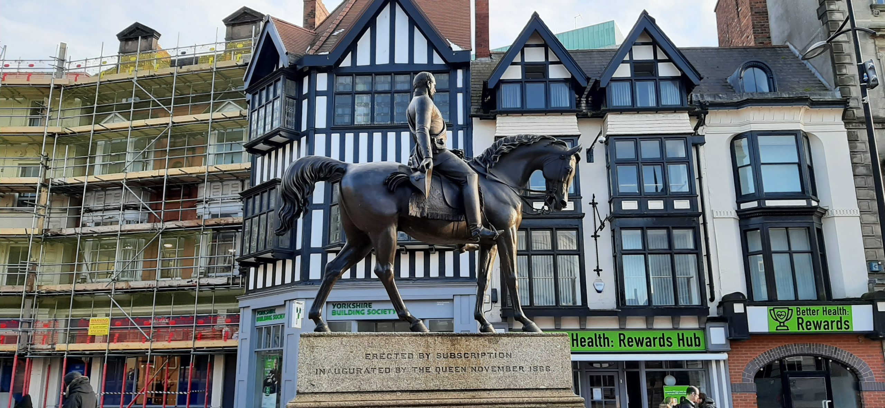
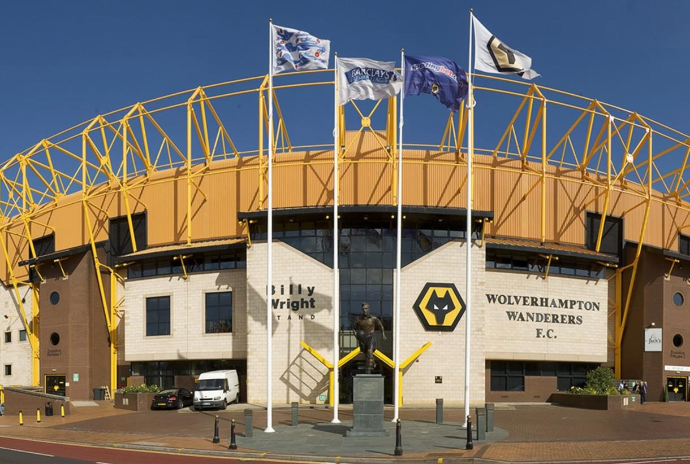

The story of Wolves.
A local tradition states that King Wulfhere of Mercia founded an abbey of St Mary at Wolverhampton in 659.
Wolverhampton is recorded as being the site of a decisive battle between the unified Mercian Angles and West Saxons against the raiding Danes in 910, although sources are unclear as to whether the battle itself took place in Wednesfield or Tettenhall.[11] Both places have since been incorporated into Wolverhampton. The Mercians and West Saxons claimed a decisive victory, and the field of Woden is recognised by numerous place names in Wednesfield.
Statue of Lady Wulfrun on western side of St. Peter's Collegiate Church
In 985, King Ethelred the Unready granted lands at a place referred to as Heantun to Lady Wulfrun by royal charter, and hence founding the settlement.
In 994, a monastery was consecrated in Wolverhampton for which Wulfrun granted land at Upper Arley in Worcestershire, Bilston, Willenhall, Wednesfield, Pelsall, Ogley Hay near Brownhills, Hilton near Wall, Hatherton, Kinvaston, Hilton near Wolverhampton, and Featherstone. This became the site for the current St. Peter's Church. A statue of Lady Wulfrun, sculpted by Sir Charles Wheeler, can be seen on the stairs outside the church.
Wolverhampton is recorded in the Domesday Book in 1086 as being in the Hundred of Seisdon and the county of Staffordshire. The lords of the manor are listed as the canons of St Mary (the church's dedication was changed to St Peter after this date), with the tenant-in-chief being Samson, William the Conqueror's personal chaplain. Wolverhampton at this date is a large settlement of fifty households.
In 1179, there is mention of a market held in the town, and in 1204 it had come to the attention of King John that the town did not possess a Royal Charter for holding a market. This charter for a weekly market held on a Wednesday was eventually granted on 4 February 1258 by Henry III.
It is held that in the 14th and 15th centuries that Wolverhampton was one of the "staple towns" of the woollen trade, which today can be seen by the inclusion of a woolpack on the city's coat of arms, and by the many small streets, especially in the city centre, called "Fold" (examples being Blossom's Fold, Farmers Fold, Townwell Fold and Victoria Fold), as well as Woolpack Street and Woolpack Alley.
In 1512, Sir Stephen Jenyns, a former Lord Mayor of London and a twice Master of the Worshipful Company of Merchant Taylors, who was born in the city, founded Wolverhampton Grammar School, one of the oldest active schools in Britain.
From the 16th century onwards, Wolverhampton became home to a number of metal industries including lock and key making and iron and brass working.
Wolverhampton suffered two Great Fires: the first in April 1590, and the second in September 1696. Both fires started in today's Salop Street. The first fire lasted for five days and left nearly 700 people homeless, whilst the second destroyed 60 homes in the first five hours. This second fire led to the purchase of the first fire engine within the city in September 1703.

The man on the horse.
The Horse and Rider statue on the Black Country Route in Wolverhampton, England was commissioned by Wolverhampton City Council and created by Tessa Pullan.
The statue is made of galvanized steel and was unveiled in 1996. Pullan first carved the sculpture out of wood, and then Arden Fabrications of Knowle scaled it up and made it out of steel.

Wolves F.C logo History.
Wolverhampton Wanderers Football Club, commonly referred to as Wolves, is a professional football club based in Wolverhampton, England.
The club competes in the Premier League, the top tier of English football.
The club has played at Molineux Stadium since moving from Dudley Road in 1889.
The club's traditional kit consists of old gold shirts and socks with black shorts.
Since 1979, the kit has also featured the club's "wolf's head" logo.
Long-standing rivalries exist with other clubs from the West Midlands, including Aston Villa, and Birmingham City but the main one being the Black Country derby contested with West Bromwich Albion.
Since 2016, the club has been owned by the Chinese conglomerate Fosun International.

Wolves F.C Stadium history.
Molineux Stadium is a football stadium situated in Wolverhampton, West Midlands, England.
It has been the home ground of Premier League club Wolverhampton Wanderers since 1889.
The first stadium built for use by a Football League club, it was one of the first British grounds to have floodlights installed and hosted some of the earliest European club games in the 1950s.
At the time of its multi-million pound renovation in the early 1990s, Molineux was one of the biggest and most modern stadia in England, though it has since been eclipsed by other ground developments.
The stadium has hosted England internationals and, more recently, England under-21 internationals, as well as the first UEFA Cup Final in 1972.